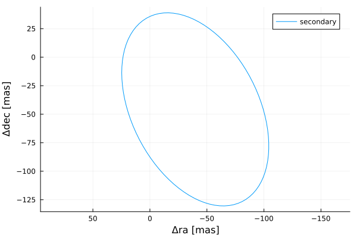
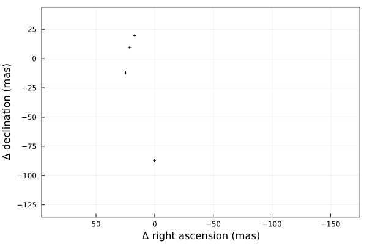
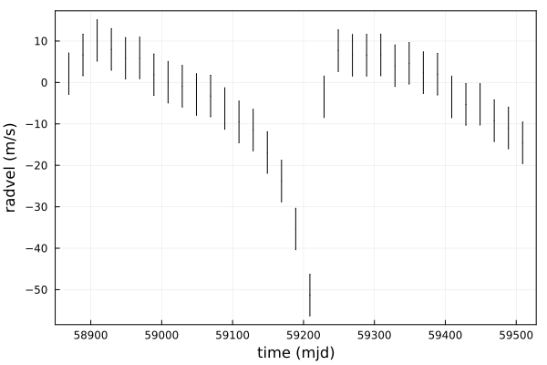
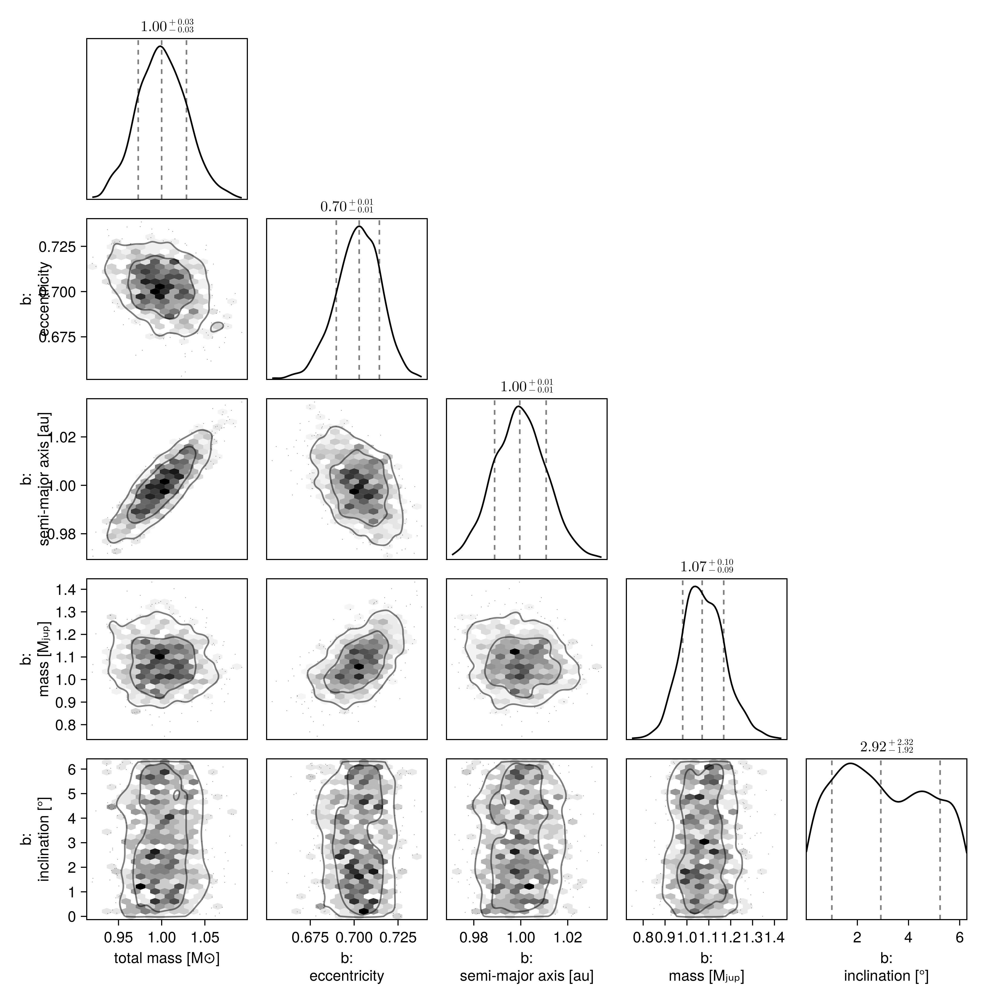
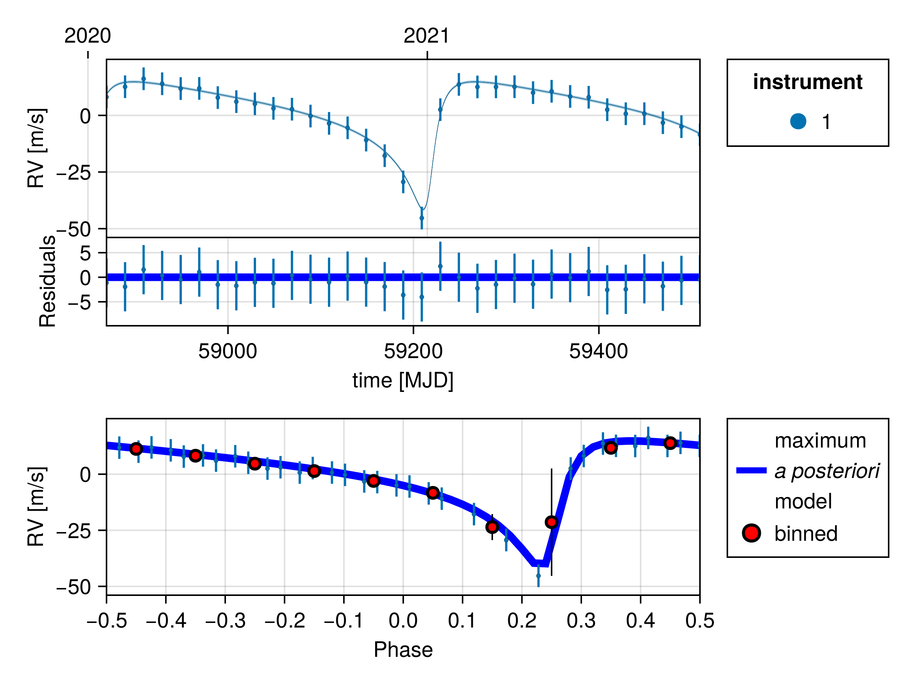

Fit Radial Velocity and Astrometry
You can use Octofitter to jointly fit relative astrometry data and radial velocity data. Below is an example. For more information on these functions, see previous guides.
Import required packages
using Octofitter
using OctofitterRadialVelocity
using CairoMakie
using PairPlots
using Distributions
using Plots:Plots
using PlanetOrbits┌ Warning: Module Octofitter with build ID ffffffff-ffff-ffff-0000-008ba6314cf7 is missing from the cache.
│ This may mean Octofitter [daf3887e-d01a-44a1-9d7e-98f15c5d69c9] does not support precompilation but is imported by a module that does.
└ @ Base loading.jl:1942
┌ Warning: Module Octofitter with build ID ffffffff-ffff-ffff-0000-008ba6314cf7 is missing from the cache.
│ This may mean Octofitter [daf3887e-d01a-44a1-9d7e-98f15c5d69c9] does not support precompilation but is imported by a module that does.
└ @ Base loading.jl:1942We now use PlanetOrbits.jl to create sample data. We start with a template orbit and record it's positon and velocity at a few epochs.
orb_template = orbit(
a = 1.0,
e = 0.7,
i= pi/4,
Ω = 0.1,
ω = 1π/4,
M = 1.0,
plx=100.0,
m =0,
tp =58849
)
Plots.plot(orb_template)
Sample position and store as relative astrometry measurements:
epochs = [58849,58852,58858,58890]
astrom = PlanetRelAstromLikelihood(Table(
epoch=epochs,
ra=raoff.(orb_template, epochs),
dec=decoff.(orb_template, epochs),
σ_ra=fill(1.0, size(epochs)),
σ_dec=fill(1.0, size(epochs)),
))PlanetRelAstromLikelihood Table with 5 columns and 4 rows:
epoch ra dec σ_ra σ_dec
┌───────────────────────────────────────
1 │ 58849 17.0428 19.6097 1.0 1.0
2 │ 58852 21.3842 9.55631 1.0 1.0
3 │ 58858 24.6966 -12.2283 1.0 1.0
4 │ 58890 0.213769 -87.2649 1.0 1.0And plot our simulated astrometry measurments:
Plots.plot(orb_template, aspectratio=1, lw=0, label="")
Plots.plot!(astrom, aspectratio=1, framestyle=:box)
Generate a simulated RV curve from the same orbit:
using Random
Random.seed!(1)
epochs = 58849 .+ (20:20:660)
planet_sim_mass = 0.001 # solar masses here
rvlike = StarAbsoluteRVLikelihood(Table(
epoch=epochs,
rv=radvel.(orb_template, epochs, planet_sim_mass) .+ randn.() .+ 100randn(),
σ_rv=fill(5.0, size(epochs)),
inst_idx=ones(Int64, size(epochs)),
))
Plots.plot(rvlike, framestyle=:box)
Now specify model and fit it:
@planet b Visual{KepOrbit} begin
e ~ Uniform(0,0.999999)
a ~ truncated(Normal(1, 1),lower=0)
mass ~ truncated(Normal(1, 1), lower=0)
i ~ Sine()
Ω ~ UniformCircular()
ω ~ UniformCircular()
τ ~ UniformCircular(1.0)
P = √(b.a^3/system.M)
tp = b.τ*b.P*365.25 + 58849
end astrom
@system test begin
M ~ truncated(Normal(1, 0.04),lower=0) # (Baines & Armstrong 2011).
plx = 100.0
jitter_1 ~ truncated(Normal(0,10),lower=0)
rv0_1 ~ Normal(0,10)
end rvlike b
model = Octofitter.LogDensityModel(test; autodiff=:ForwardDiff,verbosity=4)
using Random
Random.seed!(1)
results = octofit(model)Chains MCMC chain (1000×32×1 Array{Float64, 3}):
Iterations = 1:1:1000
Number of chains = 1
Samples per chain = 1000
Wall duration = 8.2 seconds
Compute duration = 8.2 seconds
parameters = M, jitter_1, rv0_1, plx, b_e, b_a, b_mass, b_i, b_Ωy, b_Ωx, b_ωy, b_ωx, b_τy, b_τx, b_Ω, b_ω, b_τ, b_P, b_tp
internals = n_steps, is_accept, acceptance_rate, hamiltonian_energy, hamiltonian_energy_error, max_hamiltonian_energy_error, tree_depth, numerical_error, step_size, nom_step_size, is_adapt, loglike, logpost, tree_depth, numerical_error
Summary Statistics
parameters mean std mcse ess_bulk ess_tail rhat ⋯
Symbol Float64 Float64 Float64 Float64 Float64 Float64 ⋯
M 1.0008 0.0285 0.0009 1068.7552 867.7391 1.0046 ⋯
jitter_1 0.7776 0.6019 0.0163 665.7889 311.1108 1.0020 ⋯
rv0_1 6.6852 0.9208 0.0298 950.2209 713.9087 1.0005 ⋯
plx 100.0000 0.0000 NaN NaN NaN NaN ⋯
b_e 0.7022 0.0127 0.0005 637.5594 742.6917 1.0001 ⋯
b_a 0.9998 0.0110 0.0004 937.3062 874.6563 1.0007 ⋯
b_mass 1.0754 0.0989 0.0034 847.1020 632.9930 0.9993 ⋯
b_i 0.7754 0.0590 0.0024 595.3167 459.4509 1.0031 ⋯
b_Ωy 0.9927 0.0206 0.0006 1129.6491 835.1843 1.0006 ⋯
b_Ωx 0.1053 0.0554 0.0020 777.0735 793.0973 1.0012 ⋯
b_ωy 0.7122 0.0666 0.0024 770.1743 787.6426 1.0004 ⋯
b_ωx 0.6944 0.0692 0.0026 731.5248 698.9634 1.0010 ⋯
b_τy 0.9998 0.0203 0.0006 1171.3083 765.2233 1.0000 ⋯
b_τx -0.0001 0.0072 0.0002 834.3980 704.4972 1.0008 ⋯
b_Ω 0.1057 0.0558 0.0020 778.7458 793.4008 1.0011 ⋯
b_ω 0.7727 0.0944 0.0035 711.0118 741.3550 1.0010 ⋯
b_τ -0.0000 0.0011 0.0000 832.1143 784.5007 1.0009 ⋯
⋮ ⋮ ⋮ ⋮ ⋮ ⋮ ⋮ ⋱
1 column and 2 rows omitted
Quantiles
parameters 2.5% 25.0% 50.0% 75.0% 97.5%
Symbol Float64 Float64 Float64 Float64 Float64
M 0.9452 0.9805 1.0000 1.0200 1.0585
jitter_1 0.0217 0.3073 0.6635 1.1275 2.3087
rv0_1 4.8548 6.0823 6.6873 7.3287 8.3864
plx 100.0000 100.0000 100.0000 100.0000 100.0000
b_e 0.6760 0.6940 0.7029 0.7112 0.7261
b_a 0.9788 0.9919 0.9996 1.0070 1.0216
b_mass 0.9022 1.0088 1.0697 1.1404 1.2838
b_i 0.6538 0.7358 0.7781 0.8140 0.8901
b_Ωy 0.9529 0.9783 0.9927 1.0072 1.0344
b_Ωx -0.0010 0.0673 0.1037 0.1417 0.2188
b_ωy 0.5816 0.6680 0.7115 0.7609 0.8356
b_ωx 0.5484 0.6513 0.7014 0.7417 0.8176
b_τy 0.9607 0.9859 0.9996 1.0121 1.0394
b_τx -0.0152 -0.0049 0.0003 0.0050 0.0124
b_Ω -0.0010 0.0669 0.1041 0.1429 0.2186
b_ω 0.5826 0.7092 0.7793 0.8371 0.9528
b_τ -0.0025 -0.0008 0.0001 0.0008 0.0020
b_P 0.9836 0.9938 0.9996 1.0053 1.0145
b_tp 58848.1061 58848.7188 58849.0187 58849.2848 58849.7232
Display results as a corner plot:
octocorner(model, results, small=true)
Plot RV curve, phase folded curve, and binned residuals:
OctofitterRadialVelocity.rvpostplot(model, results,)
Display RV, PMA, astrometry, relative separation, position angle, and 3D projected views:
octoplot(model, results)